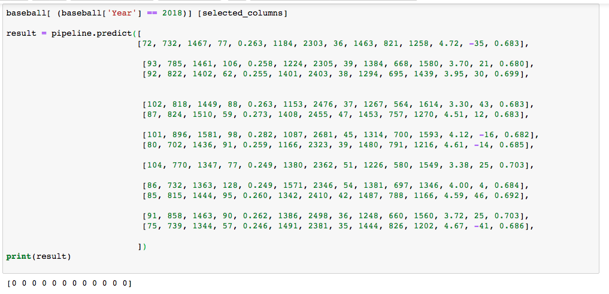

Decision Tree Pipeline
This image shows that the data for each factor is normally distributed. So a pipeline is made for a Decision Tree classification model.
Decision Tree Accuracy
This image shows the accuracy of the train/test split of the data from 2008-2017. Then, below it displays the code and results of using prediction and score seperately. The final cell shows the feature importances r squared values. 4 of the top 5 factors are defensive stats.
Past Prediction Results
This image shows the results of the decision tree model given the training data at predicting the correct winners of the past 10 world series. Results show 7 out of 10 are correct.
And the Winner Is...

The Decision Tree can't make a decision based on the data because the training data for non-winners is 30 times higher
Random Forest Accuracy
This shows that the accuracy of the model is high, at least at predicting the non-winners. Notice that the feature_importances are different than with the Decision Tree.
Random Forest Results
Predicted winners--- Houston!

Logistic Regression Results
The model isnt completely confident on a winner either, but we see the the highest probablity is, CLEVELAND!